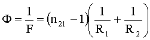

Что такое Оптика?
Оптика - это раздел физики, который изучает свойства света и его взаимодействие с веществом. Оптика включает в себя изучение таких явлений, как преломление, отражение, дифракция, интерференция, поляризация и другие.
Оптика - это раздел физики, который изучает свойства света и его взаимодействие с веществом. Оптика включает в себя изучение таких явлений, как преломление, отражение, дифракция, интерференция, поляризация и другие.
Оптика имеет широкие практические применения в различных областях, таких как:
1. Оптические приборы: оптика используется для проектирования и разработки различных оптических приборов, таких как линзы, зеркала, призмы, микроскопы, телескопы и другие.
2. Оптические технологии: оптика применяется в различных технологиях, таких как лазерная резка, оптическое покрытие, оптические волокна и другие.
3. Медицина: оптика используется в медицине для диагностики и лечения различных заболеваний, таких как катаракта, глаукома, рак глаза и другие.
4. Космическая техника: оптика применяется в космической технике для проектирования и разработки различных оптических приборов, таких как спутниковые телескопы, лазерная связь и другие.
1. Геометрическая оптика: изучает свойства света на основе геометрических законов преломления и отражения. В геометрической оптике изучаются такие явления, как образование изображений, линзы, зеркала, призмы и другие.
2. Физическая оптика: изучает свойства света на основе электромагнитной теории света. В физической оптике изучаются такие явления, как интерференция, дифракция, поляризация и другие.
3. Квантовая оптика: изучает взаимодействие света с веществом на уровне квантовой механики. В квантовой оптике изучаются такие явления, как фотоэффект, квантовые состояния света и вещества, лазеры и другие.
4. Оптические материалы: изучает свойства оптических материалов и их применение в различных оптических приборах. В оптических материалах изучаются такие явления, как прозрачность, поглощение, рассеяние и другие.
5. Биооптика: изучает взаимодействие света с биологическими системами. В биооптике изучаются такие явления, как оптическая томография, фотодинамическая терапия, оптические датчики и другие.

